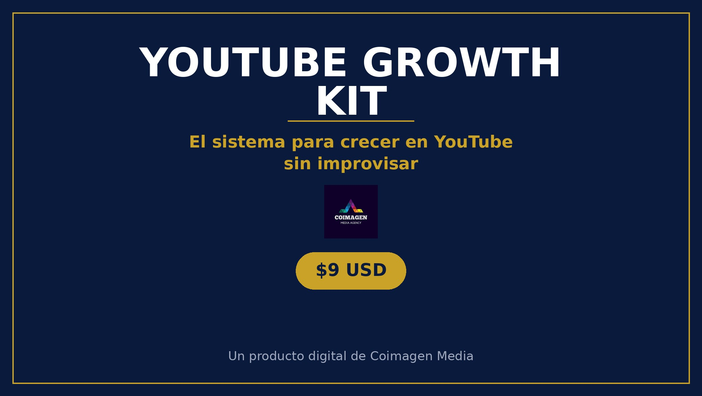

MICROPRODUCTO · DESCARGA INMEDIATA
Tu canal no necesita otro video viral. Necesita un sistema.
YouTube Growth Kit: los 5 pilares para crecer en YouTube sin improvisar — nicho, packaging, retención, constancia y métricas — con 10 fórmulas de títulos, estructura de video que retiene y 3 worksheets rellenables.

Lo quiero por $9 →Pago único · Acceso inmediato · Sin suscripción